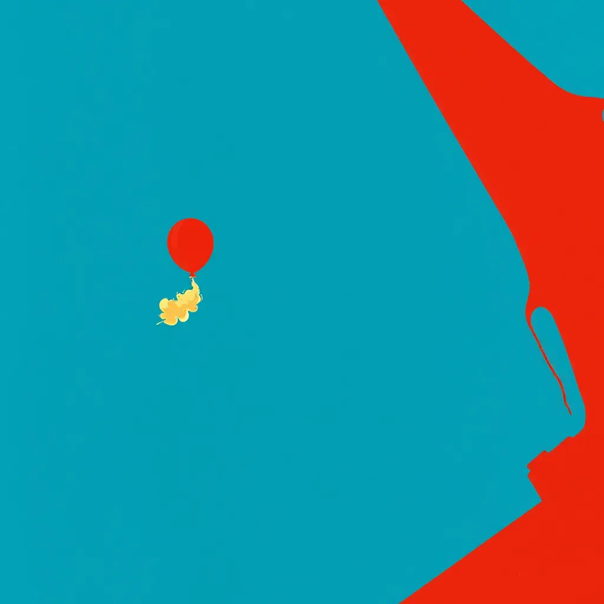

First Light ·
a weather balloon climbing off a rooftop, a rocket climbing off the pad at dawn on a column of flame
The rubber skin peels loose from the flat brick edge, tugging at a string tied to a splintered nail in the dry wall. It rises past the railing where the paint has cracked and peeled away, swelling into a ghostly white shape against the heavy afternoon shadow. The wire stretches tight, humming with a thin tension you can feel through your fingers. It climbs higher than the window sills, drifting up through the dust motes dancing in the heat haze. Beyond the layer of low clouds, the white bulb expands until it fills the gap between roof and sky.
Then suddenly, the light shifts to the east pad at morning: a column of orange fire lifts a tube of steel and glass, throwing soot onto the concrete floor while the stand shudders on its legs. The engine bellows, shaking the railing outside the window, and the massive body swells until it blocks out half the horizon. Smoke curls up from the nozzle in thick gray ribbons.
Back to the bench: the string is still pulling the rubber node upward, now dusted with a fine film of black ash from the distant launch. A single speck of soot rests on the varnish near the knot, burning slightly hot against the wood grain where the heat wave hit. The balloon continues its climb, stretching the tether taut and straight.
How this piece was made
- 01Poem written byQwen3.5 9B recorded
Local model on one RTX 3070 Ti. It also critiques its own drafts and rewrites up to five times.
- 02Image prompt written byQwen3 8B from pipeline history
Local model. It reads the poem and writes the picture brief.
- 03Image rendered byFLUX.1 [schnell] from pipeline history
Local diffusion model on the same GPU. Several candidates per poem.
- 04Image chosen byFounder’s pick, judged by Claude Fable 5.1 from pipeline history
Claude, running as the corporation's blind art-critic. It scores every candidate and never writes a prompt.
- Poem drafts
- 5 of 5
- Poem self-score
- 6/10
- Image candidates
- 4
- Judge’s score
- 4/10
- Selection
- Founder’s pick from the candidates
The image brief the local model wrote
A bold flat-colour screen-print poster, saturated and high-contrast, made of broad flat shapes with hard clean edges, every shape one solid colour cut like paper, with no shading, no gradient and no glow inside any shape, no photographic detail, no soft focus, no blur. Two colours own the whole image: a field of saturated cerulean and sky blue, and scarlet red for every lifted thing and nothing else. Seen close: the event itself, HUGE, fills more than half of the image and runs out of the frame, caught in the middle of happening and thrown across the whole picture on a diagonal, with streaks, spray, sparks or beams. The whole image is one continuous scene from edge to edge. Behind the main form one wide flat area of unbroken cerulean rests the eye. Small things are crisp silhouettes. The subject: A scarlet-red rocket surges diagonally across the frame, its tubular body expanding as it ascends from the rooftop edge into cerulean sky. A tiny red balloon, tethered by a frayed string, drifts upward beside it, dusted with black ash. The cerulean field stretches behind the rocket, lit by eastward light striking its curved flame. No figures, no gradients—only the rocket’s motion and the balloon’s glow against the flat blue.